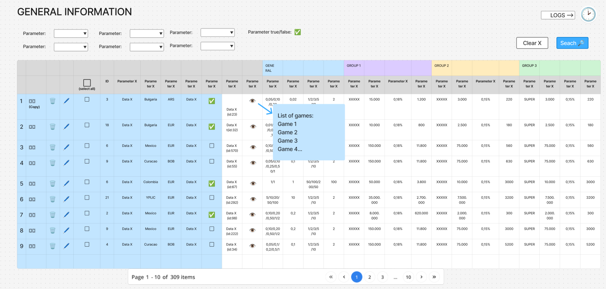
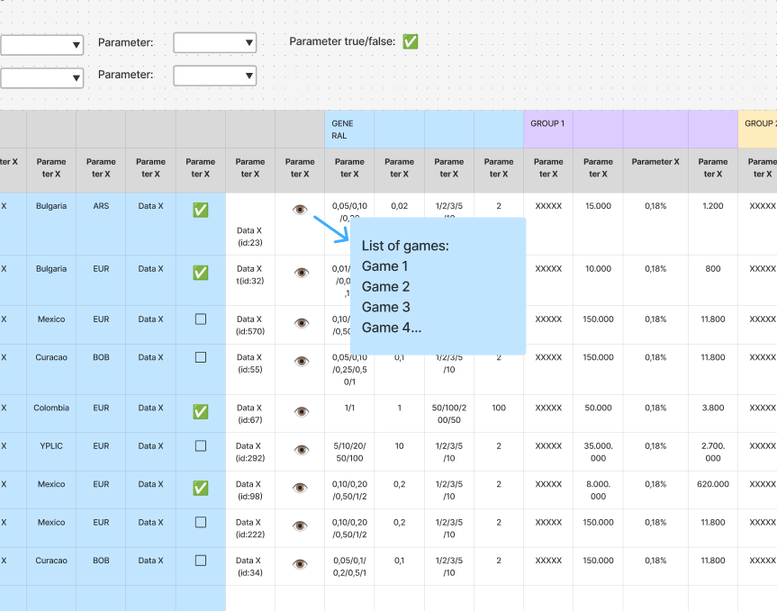
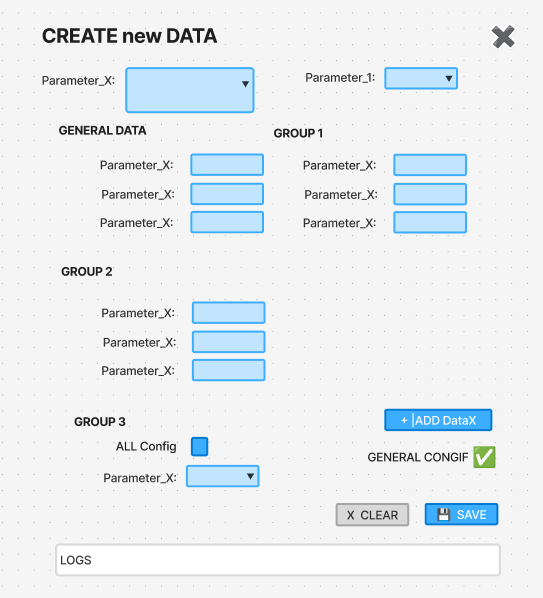
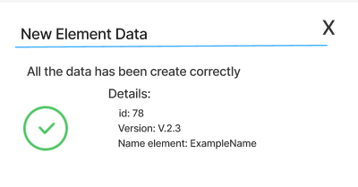
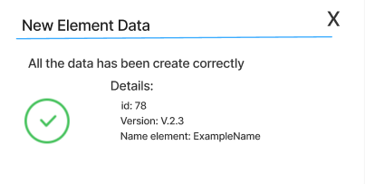
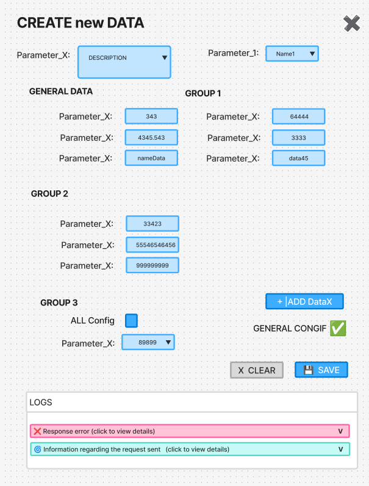
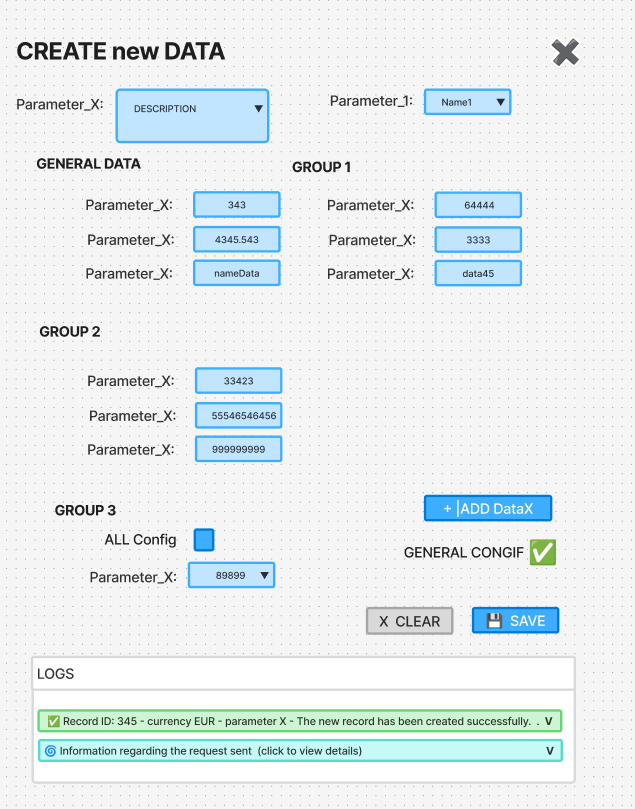
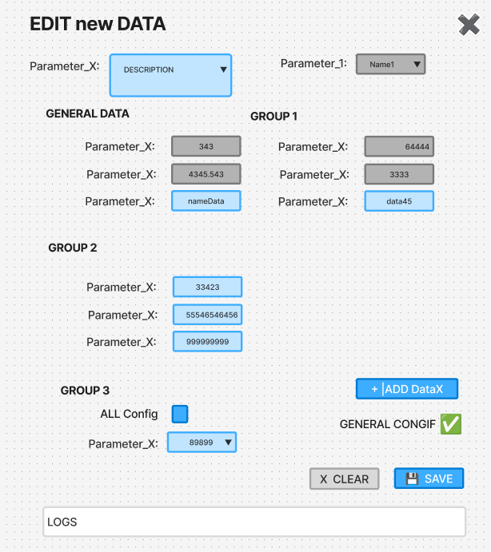
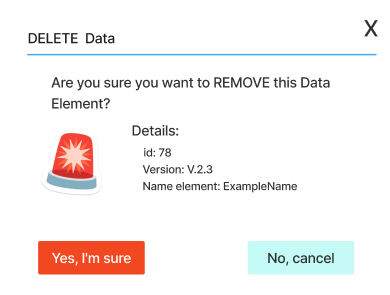

EXAMPLE OF PRODUCT DOCUMENTATION
Intro → A short introduction.
Important general information (only if necessary)
LOCATION SECTION

SEE MENU DOCU
MENÚ DOCU
RELATED JIRA TICKETS IN THIS SECTION
Dev_FRONT:
- (ticket links)
DESIGN:
- (ticket links)
SERVER (Dev_BACK):
- (ticket links)
DESIGN FIGMA → linkFigma
MAIN PAGE AND FILTERS
MAIN PAGE
In the general page, apart from the search engine and the tables, we have a “home” button that takes us to the main menu, another one to create new records and a clock that opens the logs of the actions performed.
When you open the page, no data should be displayed, so that it loads quickly. Once you’ve applied the filter and clicked the search button, the data should appear.
ENDPOINTS and API
FIND
/endpointFind/GET
/endpointGet/{id}API Api Example (link)
Database: bbdd_ejemplo
FILTERS
The filters that should appear in this section are as follows:
- Parameter_1: is a selector that shows different xxxxx and allows typing to find the one we need. Once selected, the xxxx selector should only show us the xxxxx of the chosen xxxxx.
- Parameter_2: Selector that must show the current xxxxx (endpoint that returns the names “/example/names/xxxxx”).
- …
- Button Search: By clicking this button we perform the search for the selected filters.
- Button clear: With this option, we delete everything that is selected in the filters at the same time.
- Hide filters: we must have the option to hide the filters (V) to be able to see more records.
TABLE
The following sections should appear in the table:
- Numbering: each row must be numbered.
- Parameter_1: shows the xxxx code.
- Parameter_2: show xxxx.
- …
Other elements in the table
- Button see: To display the rest of the values.
- New button: this button opens the view for creating new registration.
- Edit button: this opens an edit pop-up to modify the values.
- Delete button: to delete one of the records.
- Button to view more information: to the left of the table, there should be a button for each record to display the rest of the parameters that are not visible at first glance.
- Records to display in the table: We should be able to see about 25 without scrolling and with scrolling up to 50 without turning the page. Scrolling must be possible with the scroll bar and with the mouse.
- Total items and page: shows the total number of records, if it is before filtering it will show the total number records that exist. If we have performed a search, the total number of records according to the ones we have filtered. For example: Page 1 - 10 of 309 items.
- Page change buttons: At the bottom of the table we can see a series of buttons to scroll through the existing pages.
- Scroll: We must be able to scroll with the mouse to see the total number of items displayed on the page.


– enlarge image(PRELIMINARY PM DESIGN TO GUIDE THE UX/UI TEAM)
SEE DETAILS
ENDPOINTS and API
FIND
/endpointFind/GET
/endpointGet/{id}API Api Example (link)
Database: bbdd_ejemplo
We will NOT display the data in a pop-up window or window, but in the same list by expanding the section of the record we want to see in more detail.
To view all the data, we must be able to do so by clicking on the ‘V’ symbol or “eye”. When we do so, the field will expand and show the rest of the fields that are not displayed in the main view.
The rest of the records in the list should continue to be displayed in the same way, and we should be able to display the details of several at the same time.
Once we expand the information, we will find the following:
- Parameter_1
- Parameter_2
- …


– enlarge imageCREATE ELEMENT
ENDPOINTS and API
CREATE
/endpointCreate/API Api Example (link)
Database: bbdd_ejemplo
STEPS TO CREATE
- Create/New item button
- Fill in the form
- Save button (the form does not close)
- A confirmation/error pop-up appears
- Close confirmation/creation pop-up
- Logs appear below the form
- View log details if necessary (they can be expanded)
- Proceed with new creation/close form


– enlarge image(PRELIMINARY PM DESIGN TO GUIDE THE UX/UI TEAM)
The fields that the new creation form must have are as follows:
| Parameter | Type | Mandatory | Description | Example data |
|---|---|---|---|---|
| Param_1 (codeXxx) |
Selector | YES | This selector has to show the list of xxxx and at the same time you have to be able to type to make the search easier. Only one xxxx should be selectable. (To display xxxx, we can use this endpoint: /example/types/xxxx) | “example98” |
| Param_2 (param2Id) |
Text | YES | Field in which to enter a text. | codeSpain |
| Param_3 (param3Id) |
Num | NO | Number value of xxxx | 3000 |
| Param_4 (param4Id) |
Array | NO | Items separated by commas | 1,2,3,4,5 |
CREATED
When you select the Create button, there are two possibilities:
1.- FAILURE TO CREATE THE NEW RECORD
If it has not been created correctly, a warning should appear explaining why it could not be created. THE CREATION POP-UP WINDOW MUST NOT BE CLOSED, as this allows us to correct only what is necessary and try to create it again.
Example of an error message when creating:


– enlarge image2.- CREATED SUCCESSFULLY
If the record has been created successfully, a confirmation pop-up window similar to this one will appear:


– enlarge imageData that must appear in detail in the pop-up:
- Parameter_1
- Parameter_2
The form must not be closed in order to view the logs.
After closing the form, the main page should be displayed by filtering by the ID of the parameter we just created. This way, we will only see the new record and can review the data created if necessary.
See InfoGeneral-LOGS (link)


– enlarge image(PRELIMINARY PM DESIGN TO GUIDE THE UX/UI TEAM)


– enlarge imageEDIT ELEMENT
ENDPOINTS and API
UPDATE
/endpointUpdate/API Api Example (link)
Database: bbdd_ejemplo
To edit a record, click on the “Edit” button in the list. The edit button will open a pop-up window where you can edit all fields.
The edit window has more or less the same fields as the creation option, but with the current data already visible and the option to modify it.
As when creating, a pop-up window will appear informing you that the modification has been successful or reporting an error ( see the section on creating).
The fields in the edit pop-up are as follows:
- Parameter ID (not editable)
- Name
- Description
- The possibility of adding or removing countries
- List of linked certifications: with the possibility of unlinking them.
- Button to create a new certification
- Button to link an existing certification
- Button to save all changes
The form must not be closed in order to view the logs.
After closing the form, the main page should be displayed by filtering by the ID of the parameter we just created. This way, we will only see the new record and can review the data created if necessary.
See InfoGeneral-LOGS (link)


– enlarge image(PRELIMINARY PM DESIGN TO GUIDE THE UX/UI TEAM)
DELETE ELEMENT
ENDPOINTS and API
DELETE
/endpointDelete/{id}API Api Example (link)
Database: bbdd_ejemplo
The delete button can be found in the same table on the main page and has a rubbish bin symbol.
The popUp should display the following information:
- Title: Delete Data
- Question: Are you sure you want to REMOVE this Data Element?
- Data:
- Currency
- Button (No, cancel)
- Button (Yes, I’m sure)


– enlarge imageReminder to the development team:
Please note down the endpoints used in this section in the shared Backend documentation so that we all have an overview of the project and can act accordingly.
Tips for testing
What can we test and what can’t we test in this section?
CREATIONS:
- In this case, we can create records in any type of control, as there is an option to delete the record.
- Create records with names that identify our equipment so that we can distinguish these test results from data relating to other equipment.
- Remember to delete any records that do not need to be retained in order to keep the database clean.
EDITING:
- You are not permitted to edit existing records that were not created by your own team.
- Check that the ability to edit some fields but not others matches the information in the documentation and the API. If there are any inconsistencies, please report them to the product team.
DELETE:
- Check that records linked to record 2 cannot be deleted.
- Verify that the deleted record actually disappears from the database (MySQL) and from its related record (MongoDB).
Examples of valid data for testing
An external document (CSV) has been created containing a table with real-life examples that meet the requirements of the endpoints for creating the records in this section. If you have completed the list (150 examples) and need more data for testing, you can re-enter them by changing the currency code (EUR, USD, MXN, etc.) – this gives you thousands of possibilities. You can view the table via the following link: “linkDataTesting”